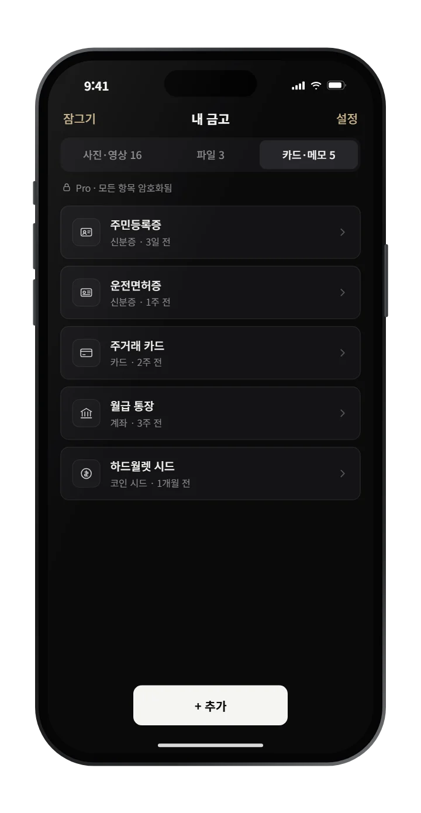

통장 사본 사진 보관법: 계좌번호 한 줄로 '통장 묶기' 당하는 이유
월급 계좌 등록, 환급금 신청, 중고 거래 정산까지. 통장 사본을 한 번 받아 두면 사진 앱과 카톡 대화방에 몇 장씩 쌓이기 쉽습니다.
결론부터: 계좌번호만으로 돈이 빠져나가지는 않습니다. 하지만 이름과 계좌번호가 함께 보이는 사진은 '통장 묶기' 사기나 사칭에 쓰일 수 있습니다. 통장 사본은 필요할 때 은행 앱에서 새로 받고, 보낼 때는 잔액을 가리고, 보관용 한 장은 사진 앱이 아닌 잠긴 곳에 두세요.
통장 사본에 담긴 정보와 새는 경로
통장 사본 한 장에는 예금주 이름, 은행, 계좌번호가 들어 있습니다. 은행 앱 화면을 캡처했다면 잔액이나 최근 거래 내역까지 찍히기도 합니다.
문제는 사진이 한 곳에만 있지 않다는 점입니다. 은행 앱에서 이미지로 저장하면 사진 앱에 들어가고, iCloud 사진을 켜 두었다면 같은 계정의 다른 기기에도 올라갑니다. 카톡으로 보냈다면 대화방 사진함에, 메일로 보냈다면 보낸편지함에도 남습니다.
| 남는 곳 | 누가 볼 수 있나 | 정리하는 법 |
|---|---|---|
| 사진 앱 '최근 항목' | 폰을 잠깐 빌린 사람 | 보낸 뒤 지우고 '최근 삭제된 항목'에서도 지우기 |
| iCloud 사진 | 같은 계정의 아이패드·맥 | 사진 앱에서 지우면 함께 지워짐 |
| 카톡 대화방 사진함 | 대화방에 있는 모든 사람 | 보낸 사진 삭제, 단체방에는 보내지 않기 |
| 메일 보낸편지함 | 메일 계정에 들어온 사람 | 제출이 끝나면 첨부 메일 삭제 |
| 받은 쪽 PC·메일함 | 제출처 직원 | 보관 기간과 파기 여부 물어보기 |
계좌번호 한 줄로 생기는 3가지 일
1. 통장 묶기 사기. 사기범이 남의 계좌번호로 돈을 보낸 뒤, 은행에 사기 피해를 당했다고 신고합니다. 그러면 그 계좌는 지급정지가 될 수 있고, 사기범은 풀어 주는 대가로 돈을 요구합니다. 가게 안내판처럼 계좌번호가 공개된 자영업자가 많이 겪지만, 이름과 계좌번호가 함께 있는 통장 사본 사진도 같은 재료가 됩니다.
2. 신분증 사본과 묶이는 경우. 통장 사본과 신분증 사진을 같은 대화방이나 같은 앨범에 함께 두는 일이 많습니다. 둘이 한꺼번에 새면 이름, 주민등록번호, 계좌가 한 묶음으로 넘어가 명의도용 시도에 쓰이기 쉽습니다.
3. 사칭과 중고 거래 사기. 남의 실명 통장 사본은 '제 계좌가 맞다'는 증거처럼 보여 사칭에 쓰일 수 있습니다. 내 이름과 계좌가 남의 거래에 등장하면 확인 연락이나 분쟁에 휘말리기도 합니다.
반대로 계좌번호만으로 출금되지는 않습니다. 겁먹고 모든 제출을 피할 필요는 없고, 필요한 곳에만 필요한 정보만 보내면 됩니다.
통장 사본 안전하게 받고 보내고 보관하는 순서
- 쓰는 은행 앱에서 계좌를 고르고 통장사본 메뉴로 이미지나 PDF를 받습니다. 메뉴 이름과 위치는 은행마다 조금 다릅니다.
- 캡처로 대신할 때는 예금주, 은행, 계좌번호만 보이게 하고 잔액과 거래 내역은 사진 앱 마크업의 사각형으로 가립니다.
- 보내기 전 제출처가 안내한 공식 경로(업로드 창, 회사 메일)가 있는지 먼저 확인합니다. 단체 대화방에는 올리지 않습니다.
- 보낸 뒤 사진 앱에서 그 사본을 지우고, '최근 삭제된 항목'에서도 지웁니다.
- 자주 내야 해서 한 장을 남겨 둘 거라면, 사진 앱 일반 앨범이 아닌 잠긴 금고에 옮겨 둡니다.
사진 앱의 '가리기'로 '가려진 항목'에 옮기는 방법도 있지만, 폰 암호를 아는 사람에게는 열립니다. 그 한계는 아이폰 가려진 항목 잠금, 켜도 열리는 4가지 경우 (Face ID 설정법)에 정리했습니다.
통장 사본은 금고에, 사진 앱엔 남기지 않게.
락박스는 사진을 서버에 올리지 않습니다.
그래도 드러나는 경우: 흔한 실수 점검표
| 실수 | 무엇이 문제인가 | 이렇게 고치기 |
|---|---|---|
| 잔액이 찍힌 화면 캡처 | 재산 정보까지 함께 넘어감 | 통장사본 메뉴로 받거나 잔액 가리기 |
| 신분증 사진과 같은 앨범 | 한 번에 묶여서 샘 | 둘 다 금고로, 보낼 때만 꺼내기 |
| 지웠는데 '최근 삭제된 항목'에 남음 | 한동안 다시 열 수 있음 | 그곳에서도 바로 지우기 |
| 가족 공유 앨범·단체방에 올림 | 여러 사람 기기에 저장됨 | 1:1 대화나 공식 경로로만 |
| 오래된 사본을 계속 재사용 | 보낸 곳이 늘수록 흔적이 늘어남 | 필요할 때 은행 앱에서 새로 받기 |
통장 사본과 함께 내는 일이 많은 신분증은 신분증 사진 휴대폰 보관, 갤러리에 두면 위험한 이유와 안전한 3단계에서, 제출용 표시 넣는 법은 신분증 사본 워터마크 넣는 법: 꼭 적을 3가지와 흔한 실수에서 볼 수 있습니다.
모르는 돈이 들어왔거나 사본이 샜다면
모르는 사람에게서 돈이 들어왔다면 직접 돌려보내지 말고 먼저 은행에 연락하세요. 돌려 달라는 연락이 와도 은행을 통해 처리하는 것이 통장 묶기 사기를 피하는 길입니다.
신분증 사본까지 함께 샜다면 금융감독원 개인정보노출자 사고예방시스템에 등록하고, 은행 앱의 비대면 계좌개설 안심차단 같은 차단 서비스를 켤 수 있는지 확인하세요. 어카운트인포(계좌정보통합관리서비스)로 내 이름으로 된 계좌를 한 번에 확인할 수도 있습니다.
락박스로 통장 사본 보관하기
락박스는 통장 사본 같은 서류 사진을 아이폰 안 금고에 AES-256-GCM으로 암호화해 둡니다. 카드·메모 탭에는 통장 양식이 있어, 사진 대신 은행과 계좌번호만 적어 둘 수도 있습니다.


금고는 폰 암호와 다른 패턴이나 PIN으로 열리고, 서버가 없어 만든 사람도 열 수 없습니다. 무료로 10개까지 보관할 수 있고, 비밀번호를 잊으면 한글 12단어 복구 문구로만 다시 열 수 있습니다.
아무도 못 열어요. 만든 사람도.
통장·신분증 사본은 사진 앱 대신 금고에.
자주 묻는 질문
계좌번호만 알면 돈을 빼 갈 수 있나요?
아닙니다. 출금에는 비밀번호와 인증이 필요합니다. 다만 통장 묶기 사기나 사칭에 쓰일 수 있어 아무 데나 두지 않는 편이 좋습니다.
통장 사본에서 잔액은 가려도 되나요?
네. 계좌 확인용 제출에는 예금주, 은행, 계좌번호만 보이면 됩니다. 잔액이나 거래 내역이 찍혔다면 가리고 보내세요.
모르는 돈이 입금됐을 때 바로 돌려보내면 되나요?
직접 돌려보내지 말고 먼저 은행에 연락하세요. 통장 묶기 사기일 수 있어, 은행을 통해 처리하는 것이 안전합니다.
통장 사본은 몇 장이나 남겨 둬야 하나요?
은행 앱에서 언제든 다시 받을 수 있어 남겨 둘 필요는 거의 없습니다. 남긴다면 한 장만 잠긴 곳에 둡니다.